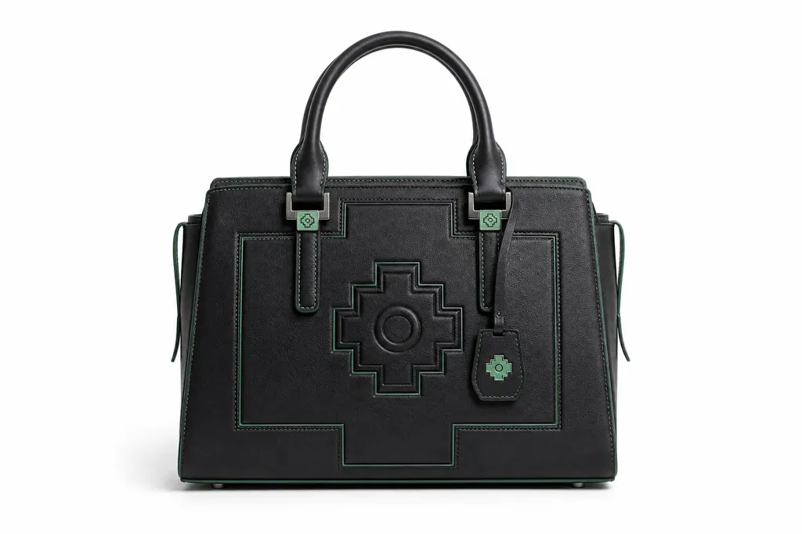
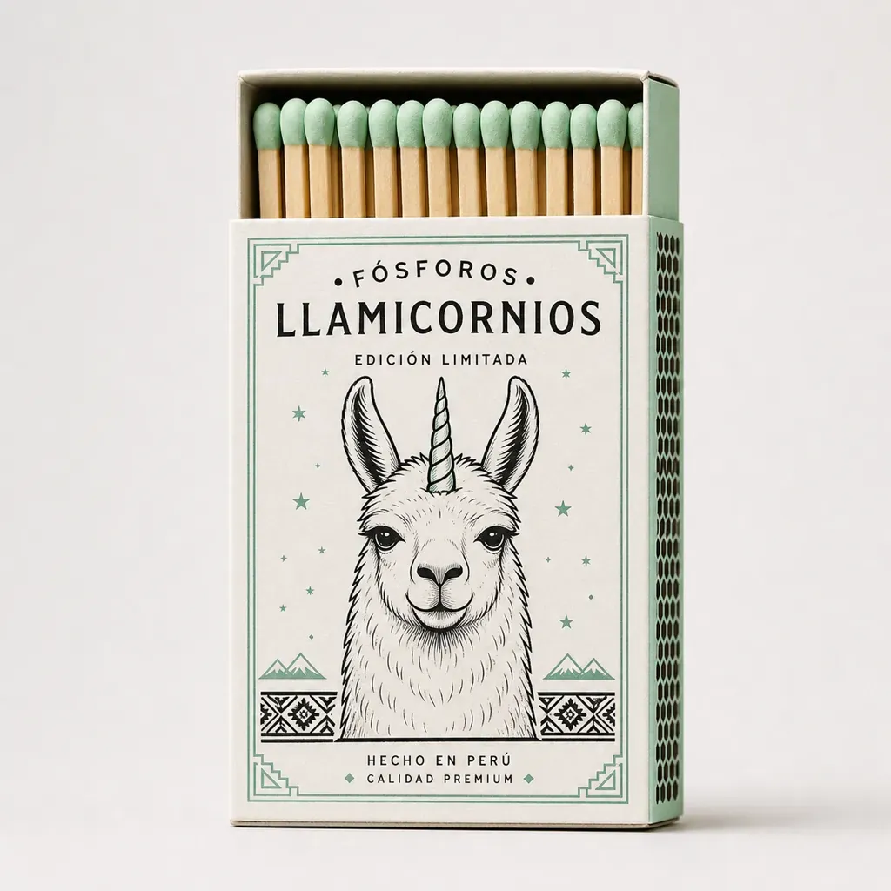
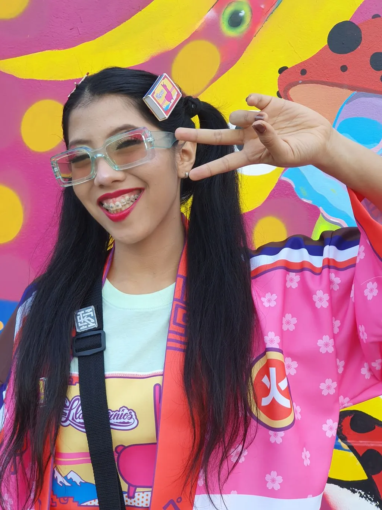
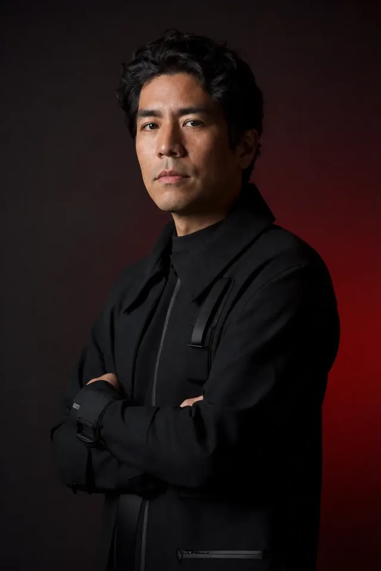

Personaje · Producto
Llamicornios
La llama andina se encuentra con el unicornio pop. Carteras, fósforos, juguetes y piezas de colección bajo un mismo personaje.
Lima, Perú · Diseño, juego y tecnología
Peruano con raíces chinas y japonesas. Tomé la iconografía andina y la estética pop japonesa, y las convertí en personajes, objetos y mundos digitales que se reconocen al instante.
 Llamicornios
Llamicornios

Personaje · Producto
La llama andina se encuentra con el unicornio pop. Carteras, fósforos, juguetes y piezas de colección bajo un mismo personaje.

Pieza icónica
Chullo + Llamicornio. La pieza que usó Jason Momoa en la premiere de Minecraft en México.
Diseño de producto
Del boceto a la pieza física.

Papelería
Fósforos y empaques intervenidos.

02 · El logro ancla
Gracias a Phillip Chu Joy, el Chullamicornio llegó a la premiere de la película de Minecraft y lo usó Jason Momoa. Una pieza peruana en el centro de un estreno global.

Diseñador gráfico, diseñador de juguetes, gestor cultural digital en Minecraft, bailarín de locking y creador de los Llamicornios. Mi trabajo parte de mi identidad: peruano con raíces chinas y japonesas.
Más de diez años integrando identidad cultural, diseño y tecnología. Más de 40 exposiciones en Perú, Chile, México, España, Bélgica, Japón y Argentina.
Latin American Design Awards 2015 · Nikon Photo Contest 2013 (3.er puesto internacional) · Toulouse Lautrec Imagen 2011 (1.er puesto).
06 · Contacto